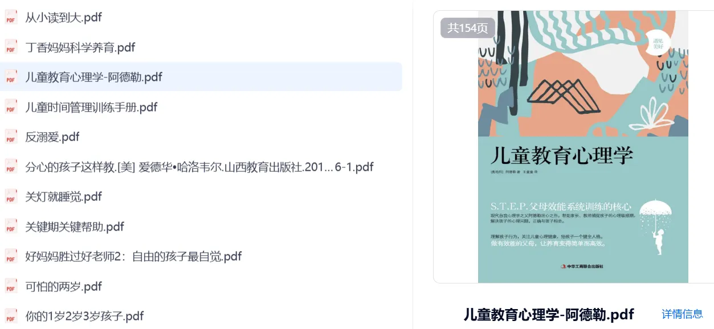
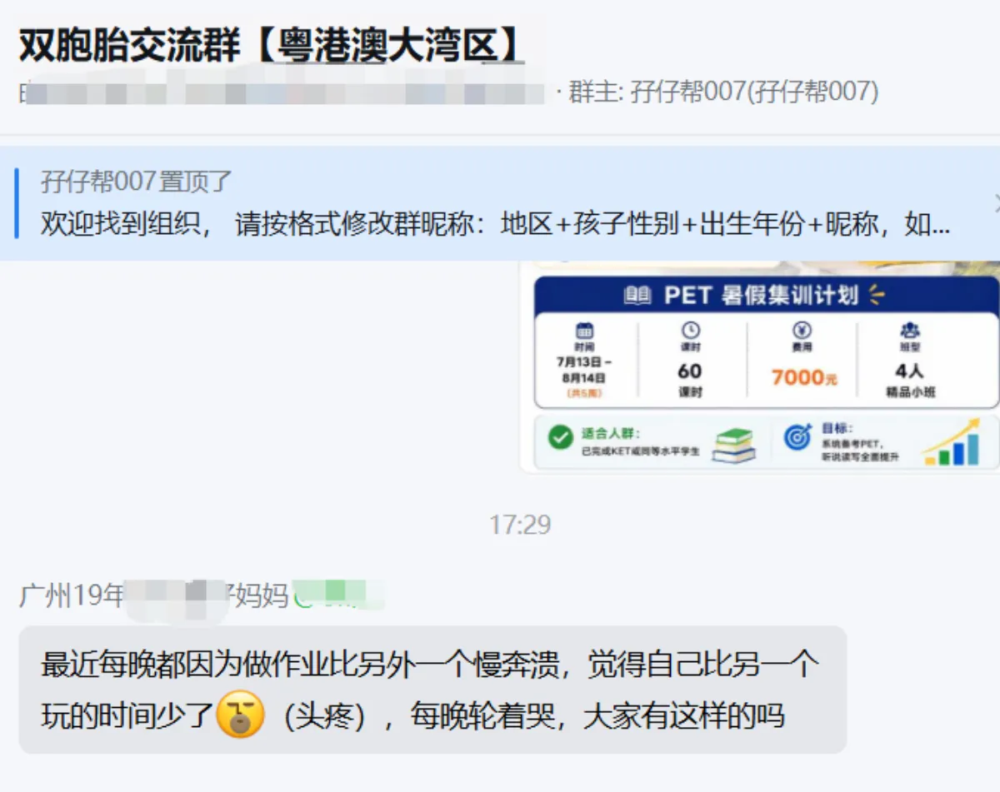

文|圆圈妈妈
回答 双胞胎交流群【粤港澳大湾区】一个问题：
最近每晚都因为做作业比另外一个慢崩溃，觉得自己比另一个玩的时间少了。每晚轮着哭，大家有这样的吗？
答案是：有！
就昨天，我家刚演过一模一样的。
期末复习周，好多卷子要做，
圈圈向来效率高，刷刷刷写完，把笔一扔，人已经在地板上摆乐高了。
圆圆呢，还在第二题磨蹭，涂改带擦了三遍，本子都快磨出洞了，
然后圆圆一抬头，看到圈圈已经在玩，就崩了。
凭什么我在写，他在玩？一样的作业，为什么我玩的时间就比他少？
圈圈这时候偏偏嘴欠，在旁边幽幽飘了一句：谁让你不快点的。
圆圆一听直接炸了，冲过去给他一个佛山无影脚。
圈圈疼哭了，找我投诉，圆圆也委屈，说他嘴欠。
两个人站在我面前，一前一后，哭得那叫一个荡气回肠....
这个场面，你要是第一次见，肯定也跟着炸。
但我经历多了，现在看到这个画面，内心已经波澜不惊，甚至有点想笑。
为什么？
他们争的，根本不是什么作业，也不是什么玩的时间。
他们争的，是一个很原始的东西——凭什么你比我玩的时间多。
哪怕多一分钟，在那个当下，就是天大的不公。
那怎么破？
我试过讲道理，没用；试过吼，更没用。
现在摸索出一套野路子，就分三步走。
先把那个嘴欠的拎走。圈圈那句“谁让你不快点的”，就是整件事的导火线。他不说，可能哼唧两声就过去了。他一说，直接燃爆。所以第一反应，不是骂打人的，是先把看热闹的那个拎走。
不跟那个哭的讲道理。圆圆在哭的时候，要是我说“快点写不就好了”，他只会哭得更大声。他要的不是解决办法，是有人接住他的委屈。我就坐他旁边说一句：我知道，你还在写，他已经玩上了，换我我也不爽。
就这一句，先接住。他一边抽噎一边点头，慢慢就自己拿起笔继续写了。
你看，他不是不懂道理，他就是情绪堵住了嘛，情绪通了，道理他自己会想明白。
当然，该收拾还是要收拾，等他平静了，再算账。我说，圆儿，你知道圈圈为什么写得快吗？不是他聪明，是他刚才写的时候，全程都在认真写，
他写第一题的时候你在玩笔，他写第三题的时候你还在看第一题。
你比他慢，不是因为你差，是因为你把时间花在别的地方了。
明天我们试一下，他写的时候你别看他，你只管你自己的，写完了，你也一样有时间玩。
这时候一般就能听进去了。
最后，还得再补一句：刚才打人这件事不对，要道歉，圈圈也要为那句嘴欠道歉。
你看，这就把账分开了。
作业慢，有作业慢的解法；
打人，有打人的后果；
嘴欠，有嘴欠的代价。
诶，说起来，“先接住情绪、再分开算账”，其实也不是我自己摸出来的，是最近看了几本书慢慢拼出来的。
像《儿童教育心理学》《儿童时间管理手册》《分心的孩子这样教》这些。

大家需要资源的，公众号后台回复“1”索取即可~
里面讲了很多我们家长日常会忽略的细节，
比如：孩子为什么会因为“多玩一分钟”就崩掉？表面是计较，其实是公平感被打断。
双胞胎为什么特别容易互相触发情绪？因为对方的存在，本身就是放大器。
还有，为什么你越讲道理，他越哭？因为情绪上来的时候，道理根本进不去，只是在空喊。
看完之后，你会慢慢不那么怕孩子哭了，知道他不是失控，是卡住了。
你要做的是先把他从情绪里捞出来。
唉....认了吧！
双胞胎这种比快慢的事，以后还有一万次。
你不可能每次都当裁判。
你只能慢慢让他们学会一件事：
我们有一样的作业，一样的起点，但不是同一个人。
你写得快，你玩你的；我写得慢，我认。我的时间，我自己挣。
这件事，比多做十张卷子重要得多。
期末考的不只是知识，还有他们怎么在彼此的存在里，稳住自己的节奏。
你家要是也在经历，别急着炸。
你又不是一个人，
今晚再哭的时候你就会发现，全中国不知道多少双胞胎家庭，此刻也正站在两个哭包中间，
表面风平浪静，内心波涛汹涌。
-未完待续-
再说3遍！双胞胎写作业，不要在一起！不要在一起！不要在一起！
为什么双胞胎分开两个房间写作业了
双胞胎写作业， 桌子摆哪？
